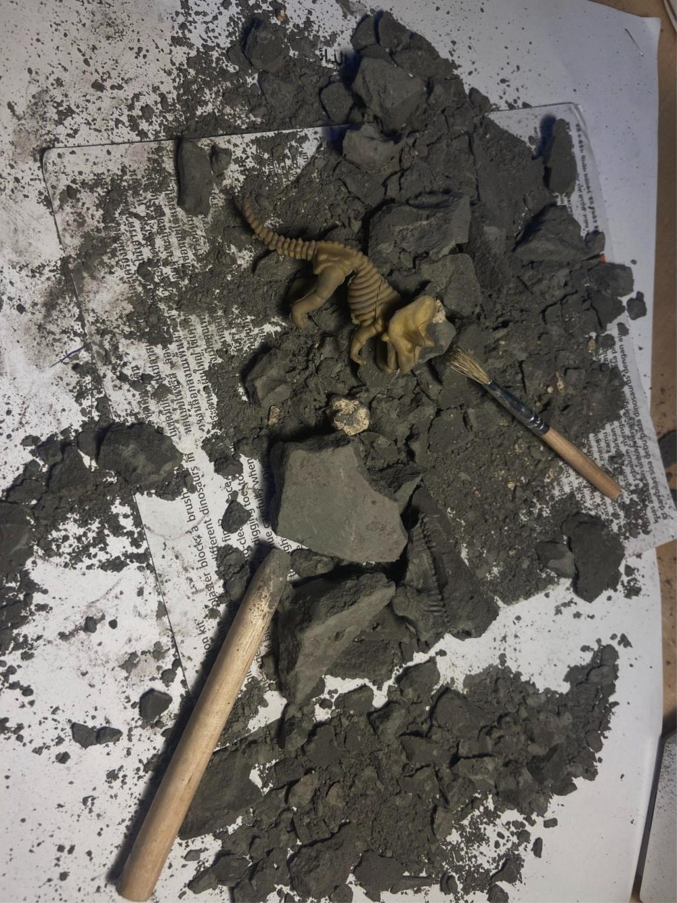
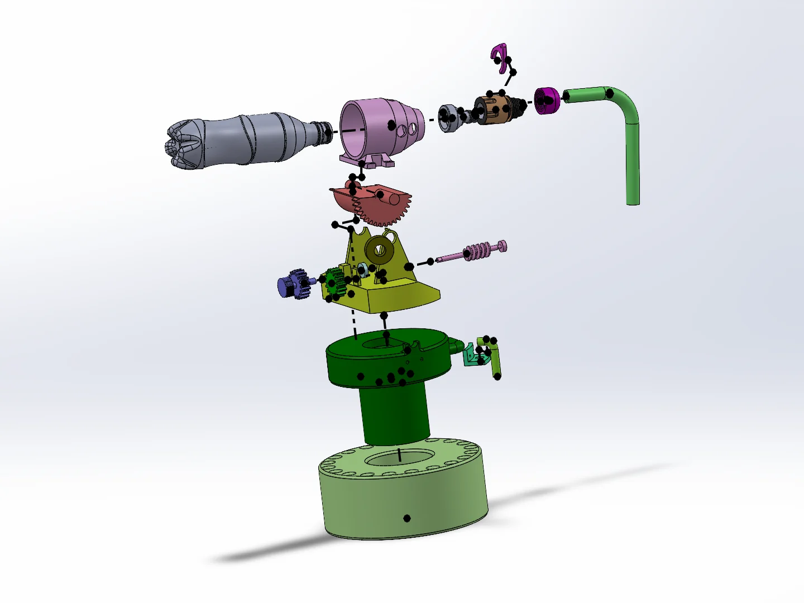

Engineering
Using maths and science to design things that solve real problems.
Issue 01 · The Stacked Life Issue
Legally Blonde Labs
Engineering, mechanical engineering, biorobotics and microbiorobotics: what Cece is curious about, and what she's building.



Mechanical Engineering · Technion · B.Sc. 2024 – present
I’m a mechanical engineering student at the Technion, drawn to the intersection of engineering and living systems at the smallest scales. My goal is to research micro-biorobotics: microscale robots informed by biological principles. I enjoy taking a design from sketch to a working part, and I work best in teams where analytical and creative problem-solving meet.
Using maths and science to design things that solve real problems.
How things move, carry loads and turn energy into motion.

Robots inspired by living things, and robots built to work with living things.
Robots so tiny they work at the scale of cells, sometimes powered by living cells themselves.
I enjoy taking a design from sketch to a working part.

Project 01 · Introduction to Graphics & Engineering Design, Technion
Design a two-axis mechanical launcher for a pressurized water-bottle rocket, providing 360° horizontal rotation and 45° vertical elevation.
My focus was integrating three independently-designed subsystems into one coherent model and documenting it.
Designed entirely in SolidWorks and built as an assembly of 3D-printable parts, with a worm-and-sector gear drive for the rotation and elevation.
Calculus 1–2, ODEs & PDEs, Physics 1–2, Statics & Mechanics of Solids 1–2, Thermodynamics, Materials Engineering, Python
I’m happy to hear about internships, research opportunities and collaborations, especially in micro-robotics and bio-inspired design.